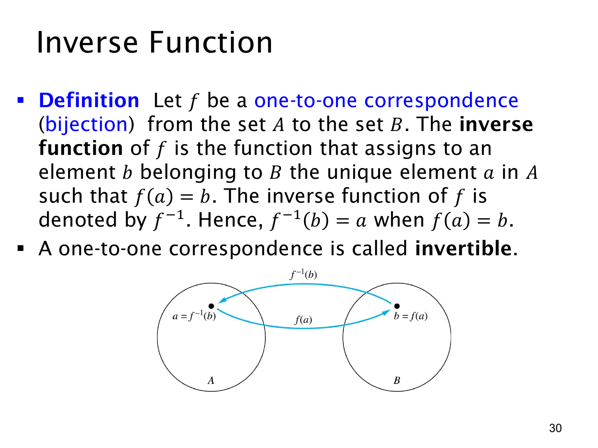

L1.4 · 第 30 页讲解原文
查看这一页课件

逆函数：把双射的箭头反过来
若 f:A→B 是双射，则每个 b∈B 都恰好对应一个 a∈A，满足 f(a)=b。于是可以定义逆函数 f−1:B→A，令
f−1(b)=a⟺f(a)=b.
课件下方的图画出从左侧 A 中的 a 指向右侧 B 中的 b 的 f 箭头，以及从 b 指回 a 的 f−1 箭头。这正是逆函数的直观意义：给定原函数的输出，找回唯一的原输入。
为什么要求双射？满射保证 B 中每个 b 都有至少一个原像，逆向时不会出现“没有值”；单射保证每个 b 至多有一个原像，逆向时不会出现“一个输入对应多个输出”。两个条件合起来，反向对应才是从整个 B 到 A 的函数。课件称这种双射为可逆（invertible）。
例如 f:Z→Z，f(n)=n+1，则 f−1(m)=m−1。检验可得 f−1(f(n))=n，以及 f(f−1(m))=m。符号 f−1 表示逆函数，一般不是 1/f；只有在另作数值倒数运算时才涉及分数 1/f(x)，两者不能混淆。